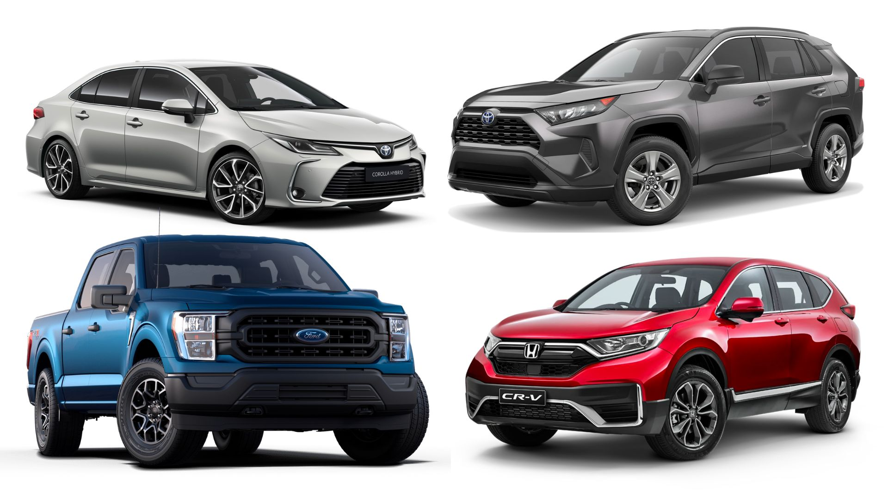

Clabi Cars is a leading digital marketplace and solutions provider for the automotive industry
that connects car shoppers with sellers. Launched in 2013 and headquartered in Bacolod, the
Company empowers shoppers with the data, resources and digital tools needed to make
informed buying decisions and seamlessly connect with automotive retailers.
In a rapidly changing market, Clabi Cars enables dealerships and OEMs with innovative technical
solutions and data-driven intelligence to better reach and influence ready-to-buy shoppers,
an innovative technology company building solutions that future-proof dealerships
with more efficient operations a faster and easier car buying process, and
connected digital experiences that sell and service more vehicles.
